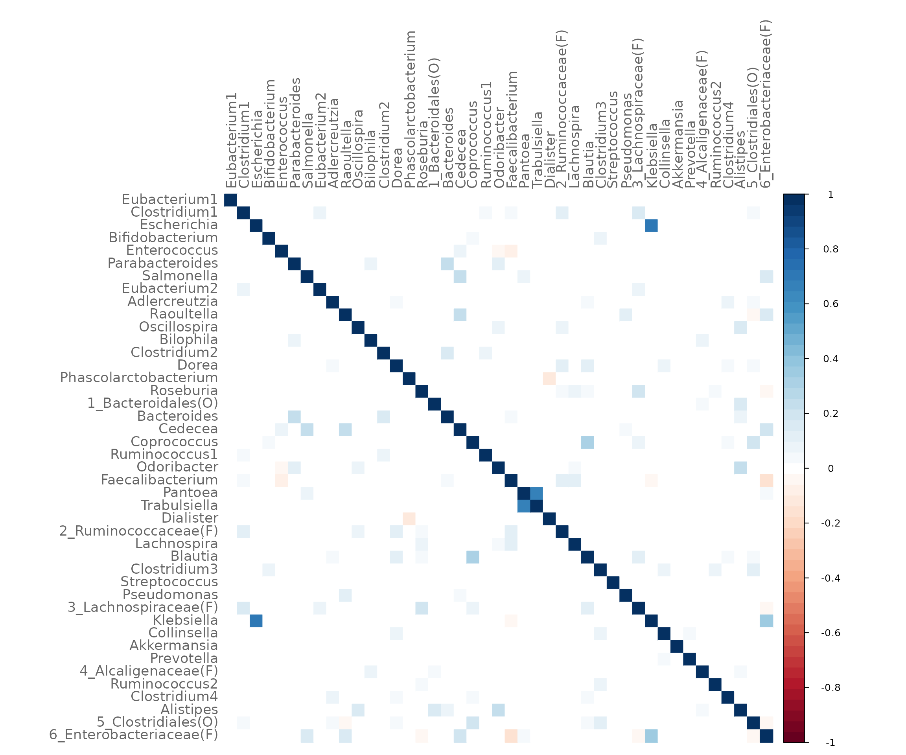
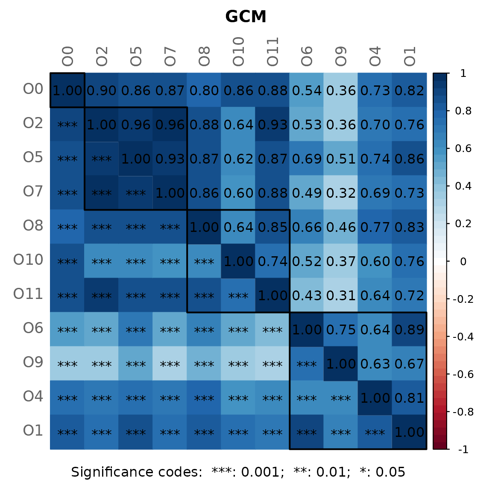
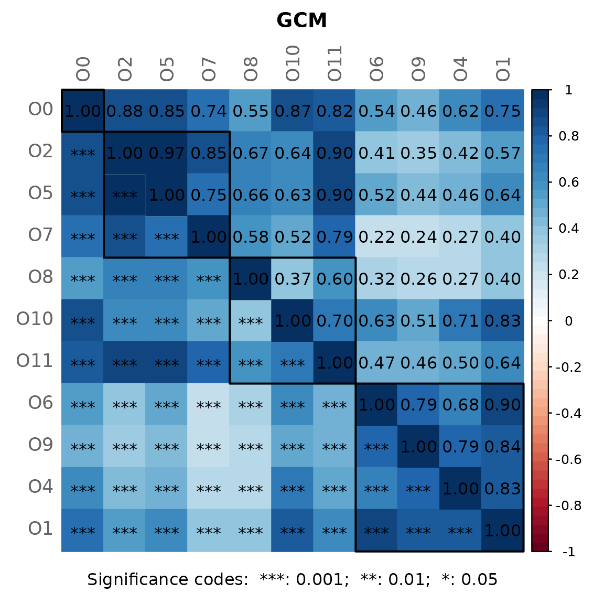
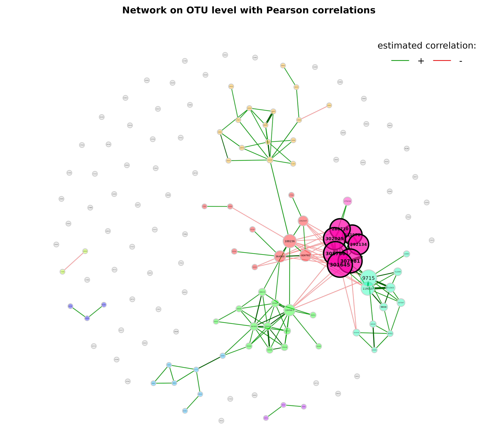
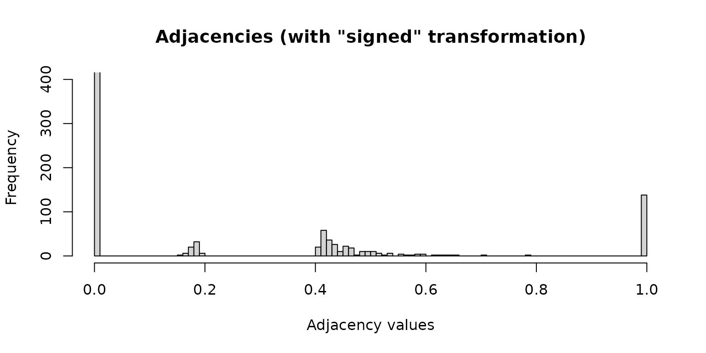
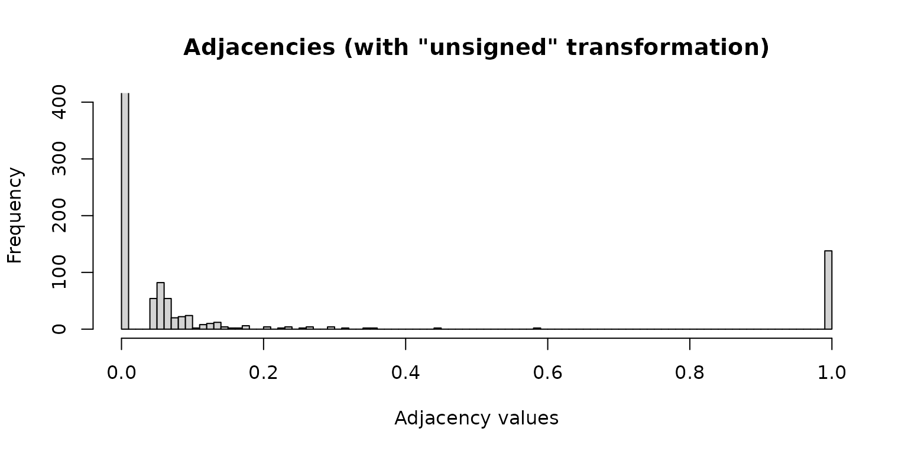
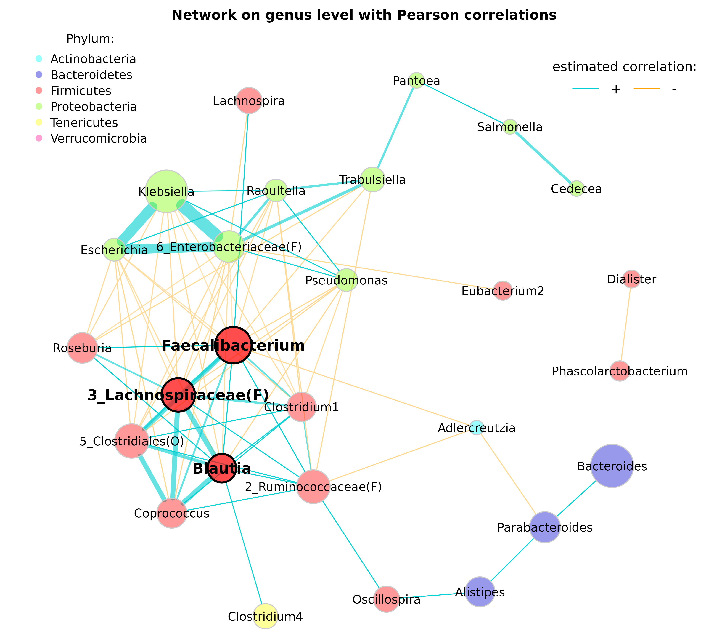

The American Gut data provided by the SpiecEasi
package are used for almost all NetCoMi tutorials.
We begin by constructing a single network on genus level, which we analyze using quantitative and graphical methods. Later, we will compare the networks of two groups: Individuals with and without seasonal allergies.
NetCoMi’s main functions are netConstruct() for network
construction, netAnalyze() for network analysis, and
netCompare() for network comparison. As should become clear
from the following examples, these three functions must be executed in
the aforementioned order. A further function is diffnet()
for constructing a differential association network.
diffnet() must be applied to the object returned by
netConstruct().
First of all, we load NetCoMi and the data from American Gut Project
(provided by SpiecEasi,
which is automatically loaded together with NetCoMi).
library(NetCoMi)
library(phyloseq)
# Load data sets
data("amgut1.filt") # ASV count matrix
data("amgut2.filt.phy") # phyloseq objextData agglomeration
Skip this step if you wish to construct the network at ASV level.
We start by agglomerating the phyloseq object to genus level, named “Rank6” in this data set.
The renameTaxa function is used to rename the taxa
according to a defined pattern and to make the genus names unique.
# Agglomerate to genus level
amgut_genus <- tax_glom(amgut2.filt.phy, taxrank = "Rank6")
# Rename taxonomic table and make Rank6 (genus) unique
amgut_genus_renamed <- renameTaxa(amgut_genus,
pat = "<name>",
substPat = "<name>_<subst_name>(<subst_R>)",
numDupli = "Rank6")
#> Column 7 contains NAs only and is ignored.Let’s compare the taxa names before and after renaming them.
head(tax_table(amgut_genus))
#> Taxonomy Table: [6 taxa by 7 taxonomic ranks]:
#> Rank1 Rank2 Rank3
#> 181016 "k__Bacteria" "p__Firmicutes" "c__Clostridia"
#> 191687 "k__Bacteria" "p__Firmicutes" "c__Clostridia"
#> 305760 "k__Bacteria" "p__Proteobacteria" "c__Gammaproteobacteria"
#> 326977 "k__Bacteria" "p__Actinobacteria" "c__Actinobacteria (class)"
#> 28186 "k__Bacteria" "p__Firmicutes" "c__Bacilli"
#> 541301 "k__Bacteria" "p__Bacteroidetes" "c__Bacteroidia"
#> Rank4 Rank5 Rank6
#> 181016 "o__Clostridiales" "f__Ruminococcaceae" "g__Eubacterium"
#> 191687 "o__Clostridiales" "f__Lachnospiraceae" "g__Clostridium"
#> 305760 "o__Enterobacteriales" "f__Enterobacteriaceae" "g__Escherichia"
#> 326977 "o__Bifidobacteriales" "f__Bifidobacteriaceae" "g__Bifidobacterium"
#> 28186 "o__Lactobacillales" "f__Enterococcaceae" "g__Enterococcus"
#> 541301 "o__Bacteroidales" "f__Porphyromonadaceae" "g__Parabacteroides"
#> Rank7
#> 181016 NA
#> 191687 NA
#> 305760 NA
#> 326977 NA
#> 28186 NA
#> 541301 NA
head(tax_table(amgut_genus_renamed))
#> Taxonomy Table: [6 taxa by 7 taxonomic ranks]:
#> Rank1 Rank2 Rank3 Rank4
#> 181016 "Bacteria" "Firmicutes" "Clostridia" "Clostridiales"
#> 191687 "Bacteria" "Firmicutes" "Clostridia" "Clostridiales"
#> 305760 "Bacteria" "Proteobacteria" "Gammaproteobacteria" "Enterobacteriales"
#> 326977 "Bacteria" "Actinobacteria" "Actinobacteria (class)" "Bifidobacteriales"
#> 28186 "Bacteria" "Firmicutes" "Bacilli" "Lactobacillales"
#> 541301 "Bacteria" "Bacteroidetes" "Bacteroidia" "Bacteroidales"
#> Rank5 Rank6 Rank7
#> 181016 "Ruminococcaceae" "Eubacterium1" NA
#> 191687 "Lachnospiraceae" "Clostridium1" NA
#> 305760 "Enterobacteriaceae" "Escherichia" NA
#> 326977 "Bifidobacteriaceae" "Bifidobacterium" NA
#> 28186 "Enterococcaceae" "Enterococcus" NA
#> 541301 "Porphyromonadaceae" "Parabacteroides" NA
taxtab <- tax_table(amgut_genus)
taxtab[taxtab[, "Rank6"] == "g__Eubacterium", ]
#> Taxonomy Table: [2 taxa by 7 taxonomic ranks]:
#> Rank1 Rank2 Rank3 Rank4
#> 181016 "k__Bacteria" "p__Firmicutes" "c__Clostridia" "o__Clostridiales"
#> 189396 "k__Bacteria" "p__Firmicutes" "c__Clostridia" "o__Clostridiales"
#> Rank5 Rank6 Rank7
#> 181016 "f__Ruminococcaceae" "g__Eubacterium" NA
#> 189396 "f__Lachnospiraceae" "g__Eubacterium" NAFor example, a “1” has been added to Eubacterium because this genus exists twice: once in the Ruminococcaceae family and once in the Lachnospiraceae family. For association estimation, it is important to distinguish between them, so they are numbered.
Network construction
We use the SPRING package for estimating associations (conditional dependence) between taxa.
The data are filtered within netConstruct() as
follows:
- Only samples with a total number of reads of at least 1000 are
included (argument
filtSamp). - Only the 50 taxa with highest frequency are included (argument
filtTax).
Note that the taxa filter is set for demonstration purposes only, but has no effect here because there are only 43 genera in the data set.
measure defines the association or dissimilarity
measure, which is "spring" in our case. Additional
arguments are passed to SPRING() via
measurePar. nlambda and rep.num
are set to 10 for a decreased execution time, but should be higher for
real data. Rmethod is set to “approx” to estimate the
correlations using a hybrid multi-linear interpolation approach proposed
by @yoon2020fast. This method considerably
reduces the runtime while controlling the approximation error.
Normalization as well as zero handling is performed internally in
SPRING(). Hence, we set normMethod and
zeroMethod to "none".
We furthermore set sparsMethod to "none"
because SPRING returns a sparse network where no additional
sparsification step is necessary.
We use the “signed” method for transforming associations into
dissimilarities (argument dissFunc). In doing so, strongly
negatively associated taxa have a high dissimilarity and, in turn, a low
similarity, which corresponds to edge weights in the network plot.
The verbose argument is set to 3 so that all messages
generated by netConstruct() as well as messages of external
functions are printed.
net_spring <- netConstruct(amgut_genus_renamed,
taxRank = "Rank6",
filtTax = "highestFreq",
filtTaxPar = list(highestFreq = 50),
filtSamp = "totalReads",
filtSampPar = list(totalReads = 1000),
measure = "spring",
measurePar = list(nlambda=10,
rep.num=10,
Rmethod = "approx"),
normMethod = "none",
zeroMethod = "none",
sparsMethod = "none",
dissFunc = "signed",
verbose = 2,
seed = 123456)
#> Checking input arguments ... Done.
#> Data filtering ...
#> 35 samples removed.
#> 43 taxa and 261 samples remaining.
#>
#> Calculate 'spring' associations ... Registered S3 method overwritten by 'dendextend':
#> method from
#> rev.hclust vegan
#> Registered S3 method overwritten by 'seriation':
#> method from
#> reorder.hclust vegan
#> Done.Let’s take a look at the edge list, which contains for each pair of nodes the estimated association, the dissimilarity and the adjacency (= edge weight for weighted networks).
head(net_spring$edgelist1)
#> v1 v2 asso diss adja
#> 1 Eubacterium1 Dorea 0.003933672 0.7057146 0.2942854
#> 2 Eubacterium1 Pantoea -0.014829516 0.7123305 0.2876695
#> 3 Clostridium1 Eubacterium2 0.095333048 0.6725574 0.3274426
#> 4 Clostridium1 Raoultella -0.012351874 0.7114604 0.2885396
#> 5 Clostridium1 Dorea 0.015673519 0.7015435 0.2984565
#> 6 Clostridium1 Cedecea -0.002316558 0.7079253 0.2920747We can also use NetCoMi’s plotHeat function to plot the
estimated associations.
plotHeat(net_spring$assoMat1, textUpp = "none", textLow = "none")
Network analysis
NetCoMi’s netAnalyze() function is used for analyzing
the constructed network.
Here, centrLCC is set to TRUE meaning that
centralities are calculated only for nodes in the largest connected
component (LCC).
Clusters are identified using greedy modularity optimization (by
cluster_fast_greedy() from igraph package).
Hubs are nodes with an eigenvector centrality value above the
empirical 95% quantile of all eigenvector centralities in the network
(argument hubPar).
weightDeg and normDeg are set to
FALSE so that the degree of a node is simply defined as
number of nodes that are adjacent to the node.
By default, a heatmap of the Graphlet Correlation Matrix (GCM) is
returned (with graphlet correlations in the upper triangle and
significance codes resulting from Student’s t-test in the lower
triangle). See ?calcGCM and ?testGCM for
details.
props_spring <- netAnalyze(net_spring,
centrLCC = TRUE,
clustMethod = "cluster_fast_greedy",
hubPar = "eigenvector",
weightDeg = FALSE,
normDeg = FALSE)
#?summary.microNetProps
summary(props_spring, numbNodes = 5L)#>
#> Component sizes
#> ```````````````
#> size: 40 2 1
#> #: 1 1 1
#> ______________________________
#> Global network properties
#> `````````````````````````
#> Largest connected component (LCC):
#>
#> Relative LCC size 0.93023
#> Clustering coefficient 0.33039
#> Modularity 0.41972
#> Positive edge percentage 83.01887
#> Edge density 0.13590
#> Natural connectivity 0.03685
#> Vertex connectivity 1.00000
#> Edge connectivity 1.00000
#> Average dissimilarity* 0.95654
#> Average path length** 1.84125
#>
#> Whole network:
#>
#> Number of components 3.00000
#> Clustering coefficient 0.33039
#> Modularity 0.42746
#> Positive edge percentage 82.24299
#> Edge density 0.11849
#> Natural connectivity 0.03362
#> -----
#> *: Dissimilarity = 1 - edge weight
#> **: Path length = Units with average dissimilarity
#>
#> ______________________________
#> Clusters
#> - In the whole network
#> - Algorithm: cluster_fast_greedy
#> ````````````````````````````````
#>
#> name: 0 1 2 3 4 5
#> #: 1 10 9 12 2 9
#>
#> ______________________________
#> Hubs
#> - In alphabetical/numerical order
#> - Based on empirical quantiles of centralities
#> ```````````````````````````````````````````````
#> 5_Clostridiales(O)
#> 6_Enterobacteriaceae(F)
#> Clostridium1
#>
#> ______________________________
#> Centrality measures
#> - In decreasing order
#> - Centrality of disconnected components is zero
#> ````````````````````````````````````````````````
#> Degree (unnormalized):
#>
#> Dorea 11
#> 5_Clostridiales(O) 11
#> 6_Enterobacteriaceae(F) 11
#> Clostridium1 10
#> Raoultella 10
#>
#> Betweenness centrality (normalized):
#>
#> 2_Ruminococcaceae(F) 0.17274
#> Dorea 0.16599
#> Odoribacter 0.13495
#> 5_Clostridiales(O) 0.12686
#> Faecalibacterium 0.12551
#>
#> Closeness centrality (normalized):
#>
#> 5_Clostridiales(O) 0.83523
#> Clostridium1 0.82623
#> 2_Ruminococcaceae(F) 0.81965
#> Faecalibacterium 0.81242
#> 6_Enterobacteriaceae(F) 0.81208
#>
#> Eigenvector centrality (normalized):
#>
#> 5_Clostridiales(O) 1.00000
#> Clostridium1 0.99952
#> 6_Enterobacteriaceae(F) 0.93828
#> Dorea 0.88613
#> 3_Lachnospiraceae(F) 0.81654Visualizing the network
We use the determined clusters as node colors and scale the node sizes according to the node’s eigenvector centrality.
# help page
?plot.microNetProps
p <- plot(props_spring,
labelScale = FALSE,
nodeColor = "cluster",
nodeSize = "eigenvector",
title1 = "Network on genus level with SPRING associations",
showTitle = TRUE,
cexTitle = 2.3,
cexLabels = 1.5)
legend(0.7, 1.1, cex = 2.2, title = "estimated association:",
legend = c("+","-"), lty = 1, lwd = 3, col = c("#009900","red"),
bty = "n", horiz = TRUE)
Note that edge weights are (non-negative) similarities, however, the
edges belonging to negative estimated associations are colored in red by
default (negDiffCol = TRUE).
By default, a different transparency value is added to edges with an
absolute weight below and above the cut value (arguments
edgeTranspLow and edgeTranspHigh). The
determined cut value can be read out as follows:
p$q1$Arguments$cut
#> 75%
#> 0.3271051Export to Gephi
Some users may be interested in how to export the network to Gephi. Here’s an example:
# For Gephi, we have to generate an edge list with IDs.
# The corresponding labels (and also further node features) are stored as node list.
# Create edge object from the edge list exported by netConstruct()
edges <- dplyr::select(net_spring$edgelist1, v1, v2)
# Add Source and Target variables (as IDs)
edges$Source <- as.numeric(factor(edges$v1))
edges$Target <- as.numeric(factor(edges$v2))
edges$Type <- "Undirected"
edges$Weight <- net_spring$edgelist1$adja
nodes <- unique(edges[,c('v1','Source')])
colnames(nodes) <- c("Label", "Id")
# Add category with clusters (can be used as node colors in Gephi)
nodes$Category <- props_spring$clustering$clust1[nodes$Label]
edges <- dplyr::select(edges, Source, Target, Type, Weight)
write.csv(nodes, file = "nodes.csv", row.names = FALSE)
write.csv(edges, file = "edges.csv", row.names = FALSE)The exported .csv files can then be imported into Gephi.
Network with Pearson correlation as association measure
Let’s construct another network using Pearson’s correlation
coefficient as association measure. The input is now a
phyloseq object.
Since Pearson correlations may lead to compositional effects when applied to sequencing data, we use the clr transformation as normalization method. Zero treatment is necessary in this case.
A threshold of 0.3 is used as sparsification method, so that only OTUs with an absolute correlation greater than or equal to 0.3 are connected.
net_pears <- netConstruct(amgut2.filt.phy,
measure = "pearson",
normMethod = "clr",
zeroMethod = "multRepl",
sparsMethod = "threshold",
thresh = 0.3,
verbose = 3)
#> Checking input arguments ... Done.
#> 2 rows with zero sum removed.
#> 138 taxa and 294 samples remaining.
#>
#> Zero treatment:
#> Execute multRepl() ... Done.
#>
#> Normalization:
#> Execute clr(){SpiecEasi} ... Done.
#>
#> Calculate 'pearson' associations ... Done.
#>
#> Sparsify associations via 'threshold' ... Done.Network analysis and plotting:
props_pears <- netAnalyze(net_pears,
clustMethod = "cluster_fast_greedy")
plot(props_pears,
nodeColor = "cluster",
nodeSize = "eigenvector",
title1 = "Network on OTU level with Pearson correlations",
showTitle = TRUE,
cexTitle = 2.3)
legend(0.7, 1.1, cex = 2.2, title = "estimated correlation:",
legend = c("+","-"), lty = 1, lwd = 3, col = c("#009900","red"),
bty = "n", horiz = TRUE)
Let’s improve the visualization by changing the following arguments:
-
repulsion = 0.8: Place the nodes further apart. -
rmSingles = TRUE: Single nodes are removed. -
labelScale = FALSEandcexLabels = 1.6: All labels have equal size and are enlarged to improve readability of small node’s labels. -
nodeSizeSpread = 3(default is 4): Node sizes are more similar if the value is decreased. This argument (in combination withcexNodes) is useful to enlarge small nodes while keeping the size of big nodes. -
hubBorderCol = "darkgray": Change border color for a better readability of the node labels.
plot(props_pears,
nodeColor = "cluster",
nodeSize = "eigenvector",
repulsion = 0.8,
rmSingles = TRUE,
labelScale = FALSE,
cexLabels = 1.6,
nodeSizeSpread = 3,
cexNodes = 2,
hubBorderCol = "darkgray",
title1 = "Network on OTU level with Pearson correlations",
showTitle = TRUE,
cexTitle = 2.3)
legend(0.7, 1.1, cex = 2.2, title = "estimated correlation:",
legend = c("+","-"), lty = 1, lwd = 3, col = c("#009900","red"),
bty = "n", horiz = TRUE)Edge filtering
The network can be sparsified further using the arguments
edgeFilter (edges are filtered before the layout is
computed) and edgeInvisFilter (edges are removed after the
layout is computed and thus just made “invisible”).
plot(props_pears,
edgeInvisFilter = "threshold",
edgeInvisPar = 0.4,
nodeColor = "cluster",
nodeSize = "eigenvector",
repulsion = 0.8,
rmSingles = TRUE,
labelScale = FALSE,
cexLabels = 1.6,
nodeSizeSpread = 3,
cexNodes = 2,
hubBorderCol = "darkgray",
title1 = paste0("Network on OTU level with Pearson correlations",
"\n(edge filter: threshold = 0.4)"),
showTitle = TRUE,
cexTitle = 2.3)
legend(0.7, 1.1, cex = 2.2, title = "estimated correlation:",
legend = c("+","-"), lty = 1, lwd = 3, col = c("#009900","red"),
bty = "n", horiz = TRUE)Using the “unsigned” transformation
In the above network, the “signed” transformation was used to transform the estimated associations into dissimilarities. This leads to a network where strongly positive correlated taxa have a high edge weight (1 if the correlation equals 1) and strongly negative correlated taxa have a low edge weight (0 if the correlation equals -1).
We now use the “unsigned” transformation so that the edge weight between strongly correlated taxa is high, no matter of the sign. Hence, a correlation of -1 and 1 would lead to an edge weight of 1.
Network construction
We can pass the network object from before to
netConstruct() to save runtime.
net_pears_unsigned <- netConstruct(data = net_pears$assoEst1,
dataType = "correlation",
sparsMethod = "threshold",
thresh = 0.3,
dissFunc = "unsigned",
verbose = 3)
#> Checking input arguments ... Done.
#>
#> Sparsify associations via 'threshold' ... Done.Estimated correlations and adjacency values
The following histograms demonstrate how the estimated correlations are transformed into adjacencies (= sparsified similarities for weighted networks).
Sparsified estimated correlations:
hist(net_pears$assoMat1, 100, xlim = c(-1, 1), ylim = c(0, 400),
xlab = "Estimated correlation",
main = "Estimated correlations after sparsification")Adjacency values computed using the “signed” transformation (values different from 0 and 1 will be edges in the network):
hist(net_pears$adjaMat1, 100, ylim = c(0, 400),
xlab = "Adjacency values",
main = "Adjacencies (with \"signed\" transformation)")
Adjacency values computed using the “unsigned” transformation:
hist(net_pears_unsigned$adjaMat1, 100, ylim = c(0, 400),
xlab = "Adjacency values",
main = "Adjacencies (with \"unsigned\" transformation)")
Network analysis and plotting
props_pears_unsigned <- netAnalyze(net_pears_unsigned,
clustMethod = "cluster_fast_greedy",
gcmHeat = FALSE)
plot(props_pears_unsigned,
nodeColor = "cluster",
nodeSize = "eigenvector",
repulsion = 0.9,
rmSingles = TRUE,
labelScale = FALSE,
cexLabels = 1.6,
nodeSizeSpread = 3,
cexNodes = 2,
hubBorderCol = "darkgray",
title1 = "Network with Pearson correlations and \"unsigned\" transformation",
showTitle = TRUE,
cexTitle = 2.3)
legend(0.7, 1.1, cex = 2.2, title = "estimated correlation:",
legend = c("+","-"), lty = 1, lwd = 3, col = c("#009900","red"),
bty = "n", horiz = TRUE)While with the “signed” transformation, positive correlated taxa are likely to belong to the same cluster, with the “unsigned” transformation clusters contain strongly positive and negative correlated taxa.
Network on genus level
We now construct a further network, where OTUs are agglomerated to genera.
library(phyloseq)
data("amgut2.filt.phy")
# Agglomerate to genus level
amgut_genus <- tax_glom(amgut2.filt.phy, taxrank = "Rank6")
# Taxonomic table
taxtab <- as(tax_table(amgut_genus), "matrix")
# Rename taxonomic table and make Rank6 (genus) unique
amgut_genus_renamed <- renameTaxa(amgut_genus,
pat = "<name>",
substPat = "<name>_<subst_name>(<subst_R>)",
numDupli = "Rank6")
#> Column 7 contains NAs only and is ignored.
# Network construction and analysis
net_genus <- netConstruct(amgut_genus_renamed,
taxRank = "Rank6",
measure = "pearson",
zeroMethod = "multRepl",
normMethod = "clr",
sparsMethod = "threshold",
thresh = 0.3,
verbose = 3)
#> Checking input arguments ...
#> Done.
#> 2 rows with zero sum removed.
#> 43 taxa and 294 samples remaining.
#>
#> Zero treatment:
#> Execute multRepl() ... Done.
#>
#> Normalization:
#> Execute clr(){SpiecEasi} ... Done.
#>
#> Calculate 'pearson' associations ... Done.
#>
#> Sparsify associations via 'threshold' ... Done.
props_genus <- netAnalyze(net_genus, clustMethod = "cluster_fast_greedy")Network plots
Modifications:
- Fruchterman-Reingold layout algorithm from
igraphpackage used (passed toplotas matrix) - Shortened labels (using the “intelligent” method, which avoids duplicates)
- Fixed node sizes, where hubs are enlarged
- Node color is gray for all nodes (transparancy is lower for hub nodes by default)
# Compute layout
graph3 <- igraph::graph_from_adjacency_matrix(net_genus$adjaMat1,
weighted = TRUE)
set.seed(123456)
lay_fr <- igraph::layout_with_fr(graph3)
# Row names of the layout matrix must match the node names
rownames(lay_fr) <- rownames(net_genus$adjaMat1)
plot(props_genus,
layout = lay_fr,
shortenLabels = "intelligent",
labelLength = 10,
labelPattern = c(5, "'", 3, "'", 3),
nodeSize = "fix",
nodeColor = "gray",
cexNodes = 0.8,
cexHubs = 1.1,
cexLabels = 1.2,
title1 = "Network on genus level with Pearson correlations",
showTitle = TRUE,
cexTitle = 2.3)
legend(0.7, 1.1, cex = 2.2, title = "estimated correlation:",
legend = c("+","-"), lty = 1, lwd = 3, col = c("#009900","red"),
bty = "n", horiz = TRUE)Since the above visualization is obviously not optimal, we make further adjustments:
- This time, the Fruchterman-Reingold layout algorithm is computed within the plot function and thus applied to the “reduced” network without singletons
- Labels are not scaled to node sizes
- Single nodes are removed
- Node sizes are scaled to the column sums of clr-transformed data
- Node colors represent the determined clusters
- Border color of hub nodes is changed from black to darkgray
- Label size of hubs is enlarged
set.seed(123456)
plot(props_genus,
layout = "layout_with_fr",
shortenLabels = "intelligent",
labelLength = 10,
labelPattern = c(5, "'", 3, "'", 3),
labelScale = FALSE,
rmSingles = TRUE,
nodeSize = "clr",
nodeColor = "cluster",
hubBorderCol = "darkgray",
cexNodes = 2,
cexLabels = 1.5,
cexHubLabels = 2,
title1 = "Network on genus level with Pearson correlations",
showTitle = TRUE,
cexTitle = 2.3)
legend(0.7, 1.1, cex = 2.2, title = "estimated correlation:",
legend = c("+","-"), lty = 1, lwd = 3, col = c("#009900","red"),
bty = "n", horiz = TRUE)Let’s check whether the largest nodes are actually those with highest
column sums in the matrix with normalized counts returned by
netConstruct().
sort(colSums(net_genus$normCounts1), decreasing = TRUE)[1:10]
#> Bacteroides Klebsiella Faecalibacterium
#> 1200.7971 1137.4928 708.0877
#> 5_Clostridiales(O) 2_Ruminococcaceae(F) 3_Lachnospiraceae(F)
#> 549.2647 502.1889 493.7558
#> 6_Enterobacteriaceae(F) Roseburia Parabacteroides
#> 363.3841 333.8737 328.0495
#> Coprococcus
#> 274.4082In order to further improve our plot, we use the following modifications:
- This time, we choose the “spring” layout as part of
qgraph()(the function is generally used for network plotting in NetCoMi) - A repulsion value below 1 places the nodes further apart
- Labels are not shortened anymore
- Nodes (bacteria on genus level) are colored according to the respective phylum
- Edges representing positive associations are colored in blue, negative ones in orange (just to give an example for alternative edge coloring)
- Transparency is increased for edges with high weight to improve the readability of node labels
# Get phyla names
taxtab <- as(tax_table(amgut_genus_renamed), "matrix")
phyla <- as.factor(gsub("p__", "", taxtab[, "Rank2"]))
names(phyla) <- taxtab[, "Rank6"]
#table(phyla)
# Define phylum colors
phylcol <- c("cyan", "blue3", "red", "lawngreen", "yellow", "deeppink")
plot(props_genus,
layout = "spring",
repulsion = 0.84,
shortenLabels = "none",
charToRm = "g__",
labelScale = FALSE,
rmSingles = TRUE,
nodeSize = "clr",
nodeSizeSpread = 4,
nodeColor = "feature",
featVecCol = phyla,
colorVec = phylcol,
posCol = "darkturquoise",
negCol = "orange",
edgeTranspLow = 0,
edgeTranspHigh = 40,
cexNodes = 2,
cexLabels = 2,
cexHubLabels = 2.5,
title1 = "Network on genus level with Pearson correlations",
showTitle = TRUE,
cexTitle = 2.3)
# Colors used in the legend should be equally transparent as in the plot
phylcol_transp <- colToTransp(phylcol, 60)
legend(-1.2, 1.2, cex = 2, pt.cex = 2.5, title = "Phylum:",
legend=levels(phyla), col = phylcol_transp, bty = "n", pch = 16)
legend(0.7, 1.1, cex = 2.2, title = "estimated correlation:",
legend = c("+","-"), lty = 1, lwd = 3, col = c("darkturquoise","orange"),
bty = "n", horiz = TRUE)